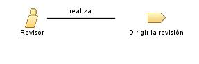

|
| Este rol proporciona información de retorno oportuna a los miembros del equipo de proyecto sobre los productos de trabajo que han enviado a revisión. |
| Conjuntos de roles: Roles generales |
|
Relaciones
 |
| Modifica |
|
| Uso del proceso |
|
Descripción principal
|
Cualquier miembro del equipo de proyecto puede desempeñar el rol Revisor, siempre que tengan las habilidades necesarias apropiadas.
Para revisiones que impliquen a varios miembros del equipo, una persona que desempeñe este rol también será necesaria
para que adopte la responsabilidad de coordinar el proceso de revisión, en el rol de Coordinador de
revisión. Las revisiones se pueden generalizar en dos categorías principales: revisiones de gestión del progreso
del proyecto (consulte el rol Revisor de
gestión) y las revisiones técnicas de los productos de trabajo del proyecto (consulte el rol Revisor técnico).
|
Personal
| Habilidades |
Dependiendo del tipo de revisión, gestión o técnica, será necesario un conjunto de habilidades diferentes:
-
Técnicas: conocimiento de dominio o experiencia subjetiva apropiada al producto de trabajo que se está
revisando.
-
Gestión: muchos años de experiencia en el sector (incluyendo formulación de contratos y negociación), la
técnica y la gestión de proyectos de software, comprensión excelente de los principios de gestión de riesgos y
muy buenas habilidades de estimación.
Como norma general, el equipo de revisión debe representar todas las partes que tienen interés en el producto de
trabajo que se está revisando, incluidos todos los consumidores del producto de trabajo. Por lo tanto, este rol lo puede
desempeñar una persona con un conjunto de habilidades que no coincida con las habilidades del autor, pero que pueda
comprender el impacto de las tareas posteriores en que se consume el producto de trabajo. |
| Propuestas de asignación |
Este rol se asigna a una o más personas según el guión, de acuerdo con los productos de trabajo que se revisan, los
equipos implicados y la disponibilidad de los miembros del personal que participan en la revisión.
|
© Copyright IBM Corp. 1987, 2006. Reservados todos los derechos.
|
|